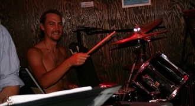

MICHAEL WELLS
Vocal Director / Composer / Drums
Michael Wells is a performer and composer based in the Los Angeles area. He is the Musical Director of The Silverlake Chorus, resident Sound Designer of needtheater, and a composer of both new-classical and pop music. In addition to music for live performance, he has written music for the web and films, most recently for Love in Bulk, directed by Andrew Rubin. Michael has a Master’s degree in Music Composition at California Institute of the Arts. He is not intimidated by asteroids.
Michael in Action...
Performing 'Never Been with a Woman' at St. Nick's Pub.

Working up a sweat during the karaoke afterparty.